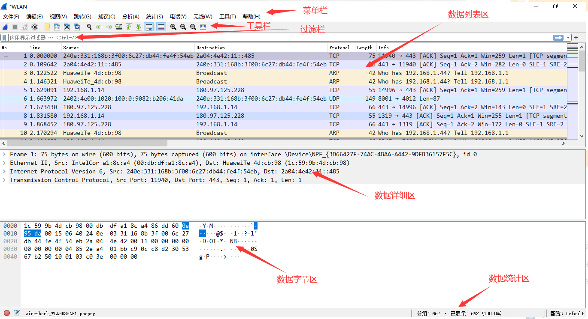
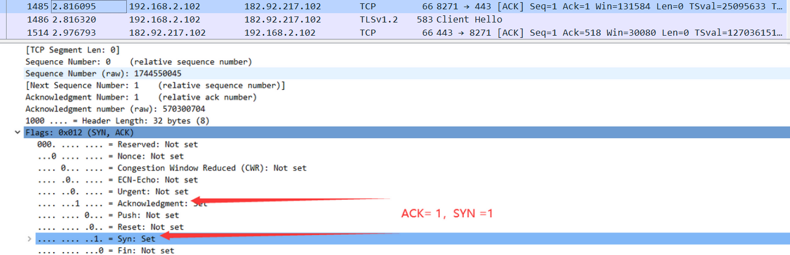
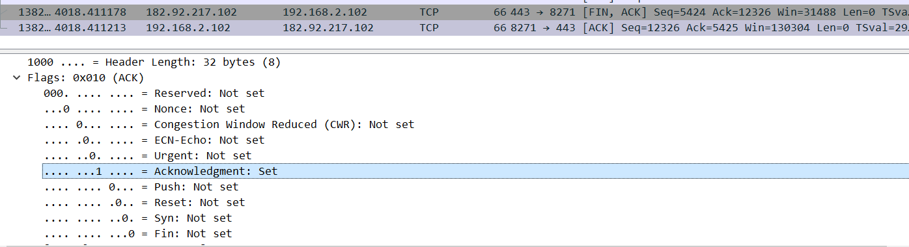

Wireshark 实验
Wireshark基本使用
- 选择一块网卡进行捕捉，可以看到WLAN有网络波动，并且结合本机网络，确实应该选择这个。
- 开始/停止捕获
选择WLAN，右键，选择Start capture 或者双击即可开始捕捉
可以看到工具栏中，有开始捕获、停止捕获、重新开始当前捕获这些基本功能。
- 了解
Wireshark主要窗口区域
tips:在wireshark的抓包界面，基本分为菜单栏、工具栏、过滤栏、数据列表区、数据详细区、数据字节区和数据统计区等等

- 开始/停止捕获: 这两个可以通过菜单栏中的捕获一项进行控制，同样也可以通过工具栏中的图标进行控制。
- 过滤栏则是快速对捕获的包进行过滤
- 在数据列表区选择某条数据的时候，下方数据详细区则会显示对应包的详细信息，同样数据字节区则会显示该包实际传递到数据字节，数据统计区会对其进行统计分析，在数据列表区右键还可以进行数据流的追踪。
- 设置数据包的过滤
tips：在过滤栏简单输入需要保留特征，回车即可快速过滤
在其中输入tcp后，协议只保留了所有TCP的协议。
同时我们还可以通过过滤，之查看与某ip相关的包
比如选择我访问qige.io的网络实验教程，查看发现远程地址是ipv6地址
由于我的网络仅支持ipv4，所以只能获取到网站的ipv4地址
我们可以看到wireshark他提供了许多过滤方案，我们在过滤器中选择仅ipv4 且输入ip地址为104.21.39.46
选择一个会话，追踪tcp流
同时我们可以看到双方整个对话，或者选择单方，然后可以把展示数据改为原始数据，然后另存到本地，通过二进制的存储，然后利用WinHex等工具对原始资源进行还原。
数据链路层
实作一：Ethernet帧结构
双击任意一个包，即可弹出详细信息界面，在这里选择数据链路层的Ethernet帧，下方即可展开该帧结构，包括目的MAC，源MAC、类型，下方还会高亮对应的数据字节。甚至还会根据MAC地址特点分析出设备厂家等。
问题：校验字段是在物理层进行校验传输是否出错的，wireshark抓的包是校验后的包，所以wireshark展现给我们的帧中没有校验字段。
实作二：子网内/外通信时MAC地址
ping 192.168.2.104 子网内通信
可以看到，此时，无论是发出的目的mac还是返回的源mac都为，对应计算机的mac实际地址。
ping baidu.com 子网外通信
发现这个地址是网关mac地址，和之前arp -a指令看到的网关地址相同

问题：究其原因，在子网内部，我的arp缓存了192.168.2.104的mac地址，而百度的没有，所以默认转发到网关出去。
实作三：掌握ARP解析过程
清空 arp 缓存
当我在ping 192.168.2.104的时候，会发出一个arp广播，
询问谁有192.168.2.104（目的ip），请告诉192.168.2.104（本机ip）
而只ping外网时候，回复的就是网关了。
问题：因为本机会自动将子网掩码和目的ip进行与运算，判断该ip是否在本子网内部，如果不在，只是会网关进行回应，如果在内部，则会等待该ip对应的主机回应。
网络层
实作一：IP包结构
问题：为了在此基础上更加提高效率，有头部长度字段和总长度字段是为了方便上层将 IP 包中的数据提取出来，当数据长度超过1500B时就会被返回链路层进行分段，这样能帮助传输时的识别IP总长度，提高传输效率。
实作二：ip包的分段与重组
tips：利用
ping命令的-l指令即可改变要发送的数据长度
问题：IPv6 中，如果路由器遇到了一个大数据包该怎么办？
路由转发到支持该数据传输的路由上或者丢掉。
实作三：考察TTL时间
使用
tracert www.baidu.com进行追踪，可以看到每次发送的ttl都是逐一增加的，每个都发三次，刚好与其结果对应。
问题：如果你收到一个包，其 TTL 的值为 50，那么可以推断这个包从源点到你之间有多少跳？
这个就不是很好判断了，因为他是一步一步减少的，但是我无法知道他的起始是多少，如果一般的64或者128来说，那就应该是64-50=14或者128-50=78了。
传输层
实作一：熟悉TCP与UPD段结构
- 熟悉 TCP 段的结构，如：源端口、目的端口、序列号、确认号、各种标志位等字段。
- 熟悉 UDP 段的结构，如：源端口、目的端口、长度等。
问题：源和目的端口号用来干什么？
端口和目的端口是用来确认某一个应用程序，IP 只能到达子网网关，MAC 地址到达子网下的指定主机，而端口号是达到主机上的某个应用程序。
作二：分析TCP建立与释放连接
打开浏览器访问
www.acwing.com[182.92.217.102]网站，用 Wireshark 抓包（可用 tcp 过滤后再使用加上Follow TCP Stream），不要立即停止 Wireshark 捕获，待页面显示完毕后再多等一段时间使得能够捕获释放连接的包。
第一次握手，SYN为1，ACK为0
第二次握手，SYN为1，ACK为1

第三次握手，SYN为0，ACK为1
SYN 同步序列号，用来发起一个TCP连接
- 四次挥手释放连接的包
第一次挥手，FIN为1，ACK为1
第二次挥手，ACK为1

第三次握手，FIN为1，ACK为1

第四次握手，ACK

TCP断开连接是通过发送FIN报文，来告诉对方数据已经发送完毕，可以释放连接了。
问题：不跟踪一个 TCP 流，你可能会看到访问 qige.io 时我们建立的连接有多个。请思考为什么会有多个连接？作用是什么？
因为这个连接属于短连接，这为了实现多个用户进行访问，对业务频率不高的场合，不让其长期占用通道。
问题：释放连接需要四次挥手，有时你可能会抓到只有三次挥手。原因是什么？
服务器向客户端发送断开连接和回复同意断开连接合成一次挥手。
应用层
实作一：DNS解析
- 先使用
ipconfig /flushdns命令清除缓存，再使用nslookup qige.io命令进行解析，同时用 Wireshark 任意抓包（可用 dns 过滤）。
QR：查询/应答标志。0表示这是一个查询报文，1表示这是一个应答报文 opcode，定义查询和应答的类型。0表示标准查询，1表示反向查询（由IP地址获得主机域名），2表示请求服务器状态 AA，授权应答标志，仅由应答报文使用。1表示域名服务器是授权服务器 TC，截断标志，仅当DNS报文使用UDP服务时使用。因为UDP数据报有长度限制，所以过长的DNS报文将被截断。1表示DNS报文超过512字节，并被截断 RD，递归查询标志。1表示执行递归查询，即如果目标DNS服务器无法解析某个主机名，则它将向其他DNS服务器继续查询，如此递归，直到获得结果并把该结果返回给客户端。0表示执行迭代查询，即如果目标DNS服务器无法解析某个主机名，则它将自己知道的其他DNS服务器的IP地址返回给客户端，以供客户端参考 RA，允许递归标志。仅由应答报文使用，1表示DNS服务器支持递归查询 zero，这3位未用，必须设置为0 rcode，4位返回码，表示应答的状态。常用值有0（无错误）和3（域名不存在）
问题：你可能会发现对同一个站点，我们发出的 DNS 解析请求不止一个，思考一下是什么原因？
DNS不止一个的原因可能是DNS解析过程是先从浏览器的DNS缓存中检查是否有这个网址的映射关系，如果有，就返回IP，完成域名解析；如果没有，操作系统会先检查自己本地的hosts文件是否有这个网址的映射关系，如果有，就返回IP，完成域名解析；如果还没有，电脑就要向本地DNS服务器发起请求查询域名；本地DNS服务器拿到请求后，先检查一下自己的缓存中有没有这个地址，有的话直接返回；没有的话本地DNS服务器会从配置文件中读取根DNS服务器的地址，然后向其中一台发起请求；直到获得对应的IP为止。
实作二：HTTP请求和应答
- 打开浏览器访问 qige.io 网站，用 Wireshark 抓包（可用http 过滤再加上
Follow TCP Stream），不要立即停止 Wireshark 捕获，待页面显示完毕后再多等一段时间以将释放连接的包捕获。
访问http://220.181.107.189/，通过HTTP过滤，可以抓取到相应的包
其中获取资源，大部分用的get
- HTTP 请求包，查看请求使用的什么命令，如：GET, POST。并仔细了解请求的头部有哪些字段及其意义。
xxxxxxxxxx1开头 基本是消息响应2开头 基本是成功响应，200——OK3开头 基本是重定向，即文件换位置了，比如304——Not Modified没有修改，在缓存中有4开头 基本就是客户端错误了，比如404——Not Found，403——Forbidden5开头 基本是服务段错误了，比如502——Bad Gateway
问题：刷新一次 qige.io 网站的页面同时进行抓包，你会发现不少的 304 代码的应答，这是所请求的对象没有更改的意思，让浏览器使用本地缓存的内容即可。那么服务器为什么会回答 304 应答而不是常见的 200 应答？
因为这样服务器不会返回源文件，也就是说你可以直接使用本地的缓存，会快速很多。
小结
使用wireshark抓包并分析，可以快速提升自身网络知识，在其中对问题的探寻可以逐步引人进入更深层次研究，但是这始终是认为规定的知识，所以我们的ip地址从ipv4会逐渐走向ipv6，但不论是什么，我们只要知道其核心理念，就一定能够理解他的构成，各网络分层的设计初衷。总体来说，wireshark是一个好用的工具，可以帮助我们对于协议的理解更进一步。